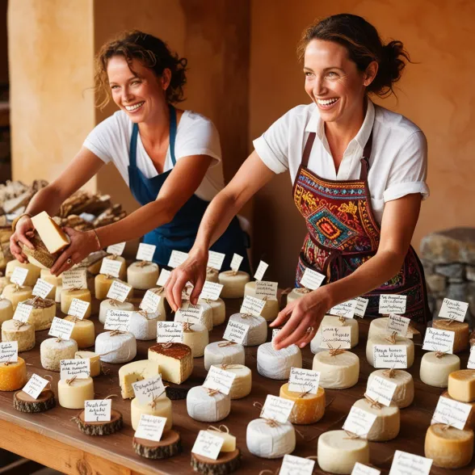
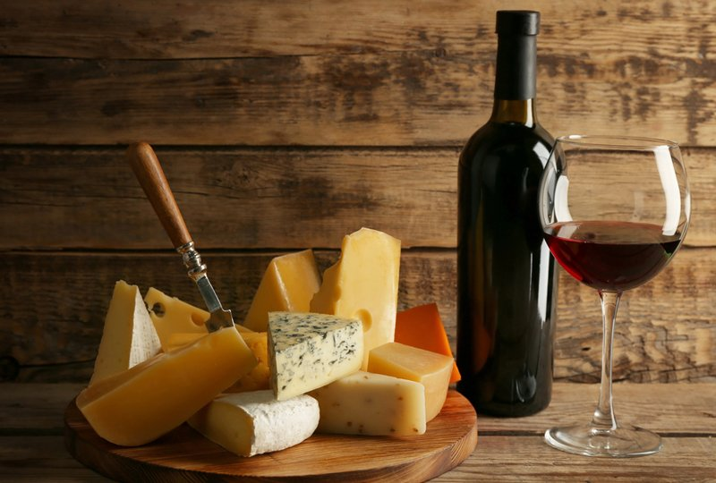
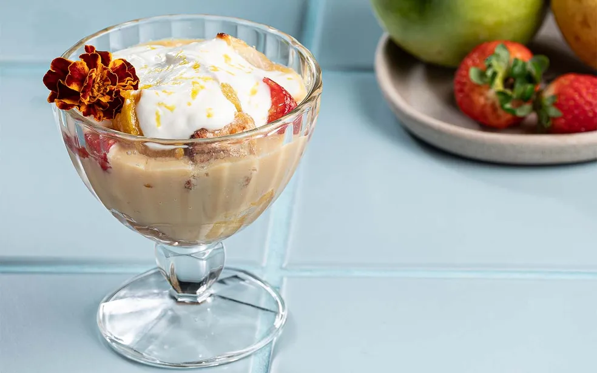
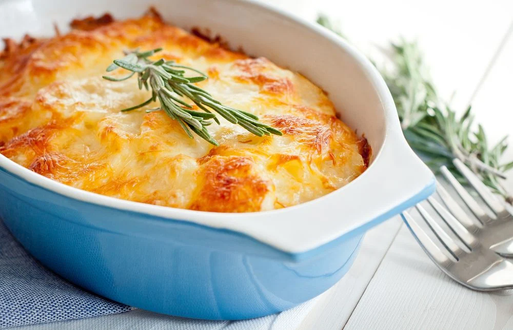
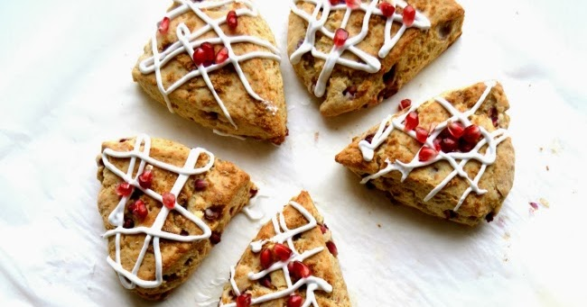
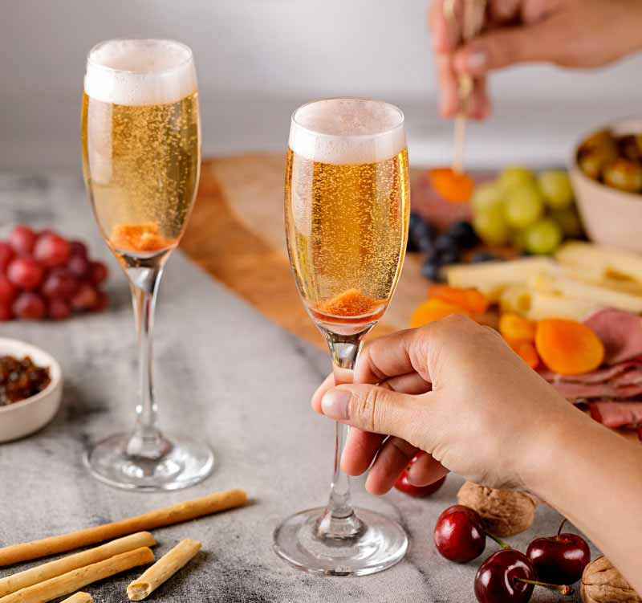
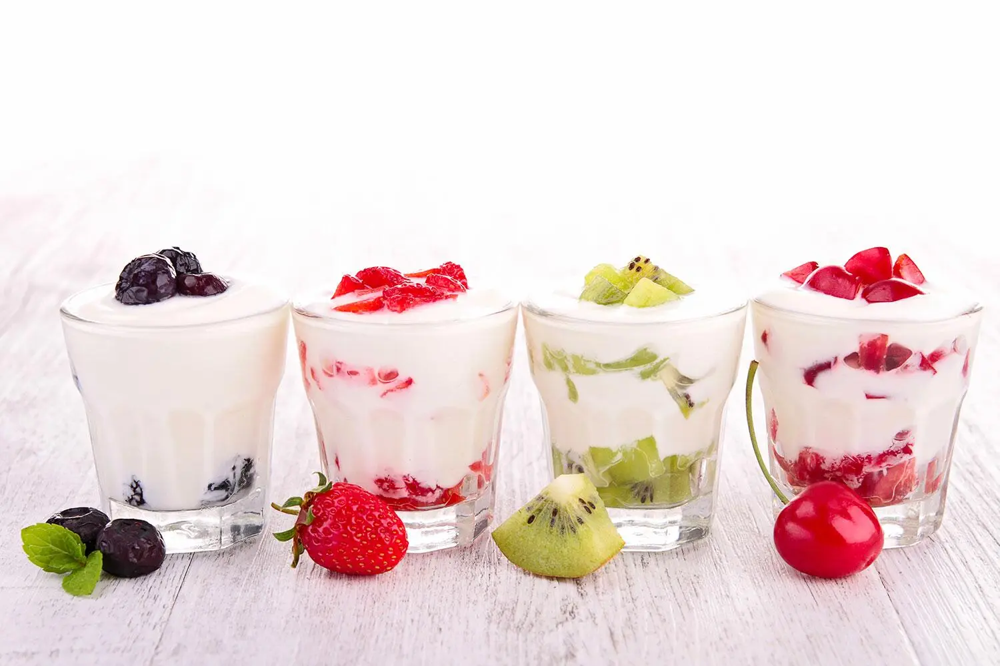

Aqui, celebramos a arte da produção artesanal de queijos, elaborados com paixão e cuidado por mulheres talentosas que preservam técnicas tradicionais transmitidas de geração em geração.

Vinhos ácidos combinam com queijos salgados. A acidez ajuda a limpar as papilas gustativas para o próximo pedaço.

O doce de leite de cabra é cremoso e combina com frutas e queijos. Seu sabor intenso é único.

A torta de frango com requeijão de cabra traz uma cremosidade única e sabor levemente ácido.

Scones de romã com manteiga de cabra criam um equilíbrio perfeito entre acidez e doçura.

Espumantes combinam com queijo Boursin, criando uma experiência deliciosa de sabores contrastantes.

Iogurte de leite de cabra combina com frutas, criando uma mistura refrescante e saborosa.